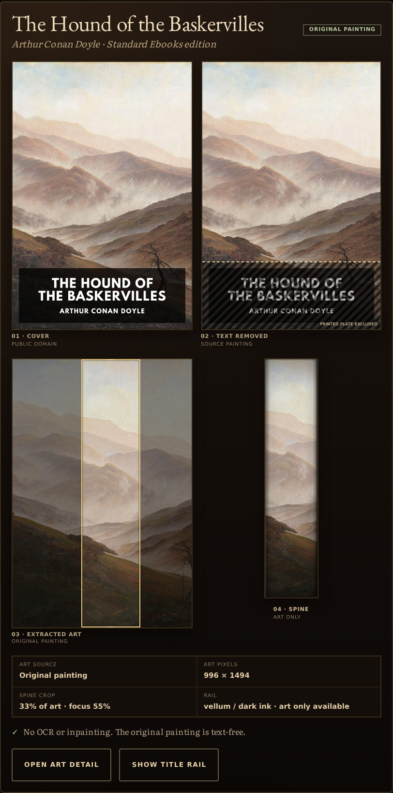
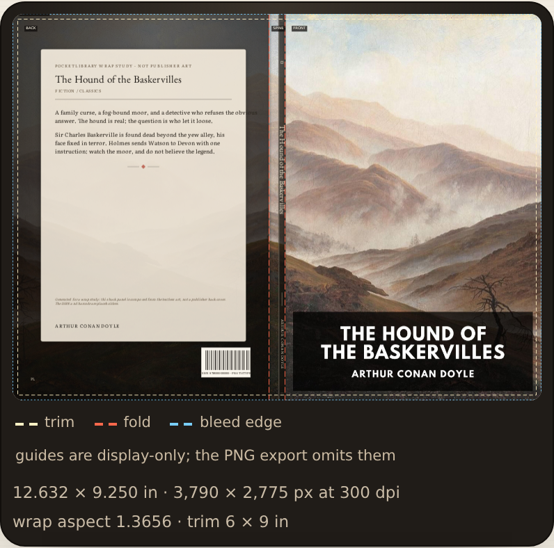

Full-bleed
AutomaticThe spine shows 33.4% of the cover width at a 55% focus point. Because the painting is light, the automatic luminance pass picks dark ink on a warm vellum rail.
1400 × 2100 source49 × 220 px spineVellum fallback
Shared reproducibility test · one book, every study
Each study was given the same randomly chosen downloadable book and asked what it could do with it. Some process it automatically. Some need a hand. One cannot run at all. The point is to make that difference visible instead of claiming a uniform pipeline.

The chosen book
Drawn once from eighteen downloadable Standard Ebooks titles, using a documented seed and shuf. The real 1400 × 2100 cover is stored in book/cover.jpg; its metadata and selection command are recorded alongside it.
Deterministic, before any study was run.
Pool. The eighteen public-domain titles already used by the suite, so every draw has a real, downloadable cover and no new source is introduced for the test.
Seed. pocketlibrary-spine-repro-2026-11-26, expanded to a one-megabyte random stream with AES-256-CTR and passed to shuf. Re-running the command yields the same title.
Page count. Standard Ebooks reports 59,285 words. At a documented 350 words per page that is 170 pages. This is a reference extent, not a claim about a particular print edition. The Design system study keeps its own 336 pp shelf record for the title.
openssl enc -aes-256-ctr \ -pass pass:pocketlibrary-spine-repro-2026-11-26 \ -nosalt -pbkdf2 < /dev/zero \ | head -c 1048576 > /tmp/spine-seed-stream.bin shuf --random-source=/tmp/spine-seed-stream.bin \ -n 1 /tmp/spine-book-list.txt # → The Hound of the Baskervilles
The same book is used in every row.
| Study | Status | What it does with this exact book |
|---|---|---|
| Full-bleed | Automatic | Crops the downloaded cover, finds a focus point, masks the printed title plate and builds the rail. |
| Textless art | Automatic | The cover already uses a public-domain painting, so the text-free artwork is used directly. No OCR or inpainting was needed for this book. |
| Wrap engine | Automatic | Uses the 170-page reference extent: 9.7 mm spine (0.382 in) and a 12.632 × 9.250 in wrap at 300 dpi. |
| Generative art | Manual only | No image model is available in this run. The study is a fixed two-cover experiment, so this book has no automatic generative result. |
| Design system | Automatic | Builds the Hybrid spine from the shared cover, using its own 336 pp / 18.0 mm shelf record. |
| Popular books | N/A | A curated popular-books shelf, not a per-cover pipeline, so the shared book is not run through it. |
| Reference | Manual export | Exports a spine-only SVG/PNG at a manually chosen 1.00 in width. Title and author are typed in; the cover is not used. |
Captured from the running prototypes.
The spine shows 33.4% of the cover width at a 55% focus point. Because the painting is light, the automatic luminance pass picks dark ink on a warm vellum rail.

The genuine painting is used directly: cover, then the printed plate excluded, then the 33% spine crop. No OCR or inpainting was required for this title.

170 pages at 0.100 mm per leaf produce a 9.7 mm spine. The title fits at 12.8 pt on the computed spine and 28.9 pt in the 1-inch stress test.

The Hybrid direction keeps a narrow art window beside a paper label. This title’s existing shelf record is 336 pp / 18.0 mm, giving a 46.6 px spine and an 8.9 px title.

Bookcover-js produces a standalone decorative spine. Width is a manual choice, not page-count arithmetic; the cover artwork is not used in this export.
An honest blocker: the study reconstructs type with an image model, but no model is available in this run. Its result is a fixed two-cover experiment, not a repeatable pipeline for an arbitrary book.
This study curates four commercial covers and judges them at shelf size; it is not a per-cover pipeline, so there is no shared-book run to report.
Read the matrix, not the average. Four studies process the shared book automatically, one needs a manual export, one is an explicit generative-only blocker, and one is a curated shelf. That spread is the result: the suite does not pretend every technique generalises to every book.